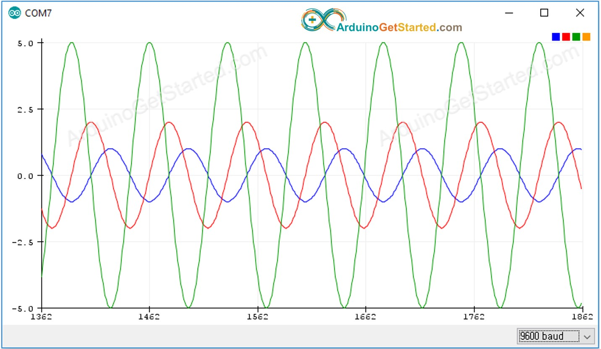

TF Magic Wand
看Arduino Nano 33 BLE模块的Magic Wand的训练数据
参考文档
Serial Plotter
https://arduinogetstarted.com/tutorials/arduino-serial-plotter
/*
* Created by ArduinoGetStarted.com
*
* This example code is in the public domain
*
* Tutorial page: https://arduinogetstarted.com/tutorials/arduino-serial-plotter
*/
void setup() {
Serial.begin(9600);
}
void loop() {
for(int i = 0; i < 360; i += 5) {
float y1 = 1 * sin(i * M_PI / 180);
float y2 = 2 * sin((i + 90)* M_PI / 180);
float y3 = 5 * sin((i + 180)* M_PI / 180);
Serial.print(y1);
Serial.print("\t"); // a space ' ' or tab '\t' character is printed between the two values.
Serial.print(y2);
Serial.print("\t"); // a space ' ' or tab '\t' character is printed between the two values.
Serial.println(y3); // the last value is followed by a carriage return and a newline characters.
delay(100);
}
}
每帧数据都以
\r\n结尾多条曲线数据放在一帧中，每条曲线的帧数据以空格或者
\t分割

arduino web editor
https://create.arduino.cc/editor
直接看示例代码
arduino ide
[Tools] -> [Manage Libraries…] -> 检索: tensorflow -> [Arduino_TensorFlowLite by TensorFlow Authors]
[File] -> [Examples] -> [Arduino_TensorFlowLite]
data capture
https://github.com/arduino/ArduinoTensorFlowLiteTutorials/blob/master/GestureToEmoji/ArduinoSketches/IMU_Capture/IMU_Capture.ino
用
,分割的数据，Serial Plotter还是能显示曲线从代码可知，是连续采样119次数据
/*
IMU Capture
This example uses the on-board IMU to start reading acceleration and gyroscope
data from on-board IMU and prints it to the Serial Monitor for one second
when the significant motion is detected.
You can also use the Serial Plotter to graph the data.
The circuit:
- Arduino Nano 33 BLE or Arduino Nano 33 BLE Sense board.
Created by Don Coleman, Sandeep Mistry
Modified by Dominic Pajak, Sandeep Mistry
This example code is in the public domain.
*/
#include <Arduino_LSM9DS1.h>
const float accelerationThreshold = 2.5; // threshold of significant in G's
const int numSamples = 119;
int samplesRead = numSamples;
void setup() {
Serial.begin(9600);
while (!Serial);
if (!IMU.begin()) {
Serial.println("Failed to initialize IMU!");
while (1);
}
// print the header
Serial.println("aX,aY,aZ,gX,gY,gZ");
}
void loop() {
float aX, aY, aZ, gX, gY, gZ;
// wait for significant motion
while (samplesRead == numSamples) {
if (IMU.accelerationAvailable()) {
// read the acceleration data
IMU.readAcceleration(aX, aY, aZ);
// sum up the absolutes
float aSum = fabs(aX) + fabs(aY) + fabs(aZ);
// check if it's above the threshold
if (aSum >= accelerationThreshold) {
// reset the sample read count
samplesRead = 0;
break;
}
}
}
// check if the all the required samples have been read since
// the last time the significant motion was detected
while (samplesRead < numSamples) {
// check if both new acceleration and gyroscope data is
// available
if (IMU.accelerationAvailable() && IMU.gyroscopeAvailable()) {
// read the acceleration and gyroscope data
IMU.readAcceleration(aX, aY, aZ);
IMU.readGyroscope(gX, gY, gZ);
samplesRead++;
// print the data in CSV format
Serial.print(aX, 3);
Serial.print(',');
Serial.print(aY, 3);
Serial.print(',');
Serial.print(aZ, 3);
Serial.print(',');
Serial.print(gX, 3);
Serial.print(',');
Serial.print(gY, 3);
Serial.print(',');
Serial.print(gZ, 3);
Serial.println();
if (samplesRead == numSamples) {
// add an empty line if it's the last sample
Serial.println();
}
}
}
}
Train
https://github.com/arduino/ArduinoTensorFlowLiteTutorials/tree/master/GestureToEmoji
arduino_tinyml_workshop.ipynb
如下是用于训练的数据，其实本质上就是对加速度计、陀螺仪数据进行建模；
从上面采集数据的代码可知，加速度计、陀螺仪数据是达到了一定的阈值以后的数据。
import matplotlib.pyplot as plt
import numpy as np
import pandas as pd
import tensorflow as tf
print(f"TensorFlow version = {tf.__version__}\n")
# Set a fixed random seed value, for reproducibility, this will allow us to get
# the same random numbers each time the notebook is run
SEED = 1337
np.random.seed(SEED)
tf.random.set_seed(SEED)
# the list of gestures that data is available for
GESTURES = [
"punch",
"flex",
]
SAMPLES_PER_GESTURE = 119
NUM_GESTURES = len(GESTURES)
# create a one-hot encoded matrix that is used in the output
ONE_HOT_ENCODED_GESTURES = np.eye(NUM_GESTURES)
inputs = []
outputs = []
# read each csv file and push an input and output
for gesture_index in range(NUM_GESTURES):
gesture = GESTURES[gesture_index]
print(f"Processing index {gesture_index} for gesture '{gesture}'.")
output = ONE_HOT_ENCODED_GESTURES[gesture_index]
df = pd.read_csv("/content/" + gesture + ".csv")
# calculate the number of gesture recordings in the file
num_recordings = int(df.shape[0] / SAMPLES_PER_GESTURE)
print(f"\tThere are {num_recordings} recordings of the {gesture} gesture.")
for i in range(num_recordings):
tensor = []
for j in range(SAMPLES_PER_GESTURE):
index = i * SAMPLES_PER_GESTURE + j
# normalize the input data, between 0 to 1:
# - acceleration is between: -4 to +4
# - gyroscope is between: -2000 to +2000
tensor += [
(df['aX'][index] + 4) / 8,
(df['aY'][index] + 4) / 8,
(df['aZ'][index] + 4) / 8,
(df['gX'][index] + 2000) / 4000,
(df['gY'][index] + 2000) / 4000,
(df['gZ'][index] + 2000) / 4000
]
inputs.append(tensor)
outputs.append(output)
# convert the list to numpy array
inputs = np.array(inputs)
outputs = np.array(outputs)
print("Data set parsing and preparation complete.")